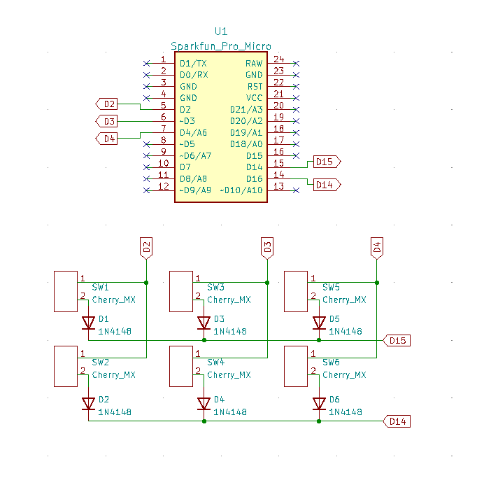

シューです
前回はキーマトリックスについて理解ができましたので
今回は実際に試作をします
#2でも試作しましたが、今回は完成に近づけたいので作ります
色々ありますが、回路を作らないことには始まりません

こんな感じに回路を組んでみました
#2ではeagleを使っていましたが今回からはKicadを使い作りました
まぁそれは置いときまして、pro microに以下のスケッチを書き込みます
Keyboardというライブラリを使っています
動作はこんな感じ
6キーのarduino製自作キーボード
— シュー.ipynb (@H2DH8K) January 8, 2022
スイッチは一個足りなかったから一つだけ無理矢理ショートさせてるけど仮だから許してほしい
それで、ショートカットももちろん使えるし
全角にしてれば日本語入力も可能
この前の試作同様、スケッチでプルアップしてるので抵抗は0
完璧 pic.twitter.com/d4f8bLvHod
私自身、あまり理解はできていませんが少しだけ解説
マトリックスについては前回を読んでいただけると助かります
して、何をしているかといいますと入力ピン、出力ピンをまず指定しています
その次に、今回の場合ですと3x2のキーマップを登録しています
for文でそれぞれピンモードを指定しています
最後に、loop関数でキーマトリックスの一列づつ監視して、入力があったら文字を入力するというのをやっています
あんまり難しいコードは書いてないので、暇だったら読んでみるといいと思います
あと、注意ですが、このスケッチですとコントロール+Cなどのキーを登録できません
もしやりたい人がいれば修正してみてください
キーボードの試作はこれで終了です
次回は最後の試作になる予定です
結構苦戦しました...
ではまた次回
ツイートする